California Housing Price Prediction
DESCRIPTION
Background of Problem Statement :
The US Census Bureau has published California Census Data which has 10 types of metrics such as the population, median income, median housing price, and so on for each block group in California. The dataset also serves as an input for project scoping and tries to specify the functional and nonfunctional requirements for it.
Problem Objective :
The project aims at building a model of housing prices to predict median house values in California using the provided dataset. This model should learn from the data and be able to predict the median housing price in any district, given all the other metrics.
Districts or block groups are the smallest geographical units for which the US Census Bureau publishes sample data (a block group typically has a population of 600 to 3,000 people). There are 20,640 districts in the project dataset.
Domain: Finance and Housing
Analysis Tasks to be performed:
- Build a model of housing prices to predict median house values in California using the provided dataset.
- Train the model to learn from the data to predict the median housing price in any district, given all the other metrics.
- Predict housing prices based on median_income and plot the regression chart for it.
#Import Necessary Libraries:
import pandas as pd
import numpy as np
from sklearn.preprocessing import LabelEncoder,StandardScaler
from sklearn.linear_model import LinearRegression,Ridge,Lasso,ElasticNet
from sklearn.tree import DecisionTreeRegressor
import statsmodels.formula.api as smf
from sklearn.metrics import mean_squared_error,r2_score
from math import sqrt
import seaborn as sns
import matplotlib.pyplot as plt
%matplotlib inline
import warnings
warnings.filterwarnings('ignore')
from matplotlib.axes._axes import _log as matplotlib_axes_logger
matplotlib_axes_logger.setLevel('ERROR')
1. Load Data
- Read the “housing.csv” file from the folder into the program.
- Print first few rows of this data.
df_house=pd.read_excel("Dataset/1553768847_housing.xlsx")
df_house.head()
| longitude | latitude | housing_median_age | total_rooms | total_bedrooms | population | households | median_income | ocean_proximity | median_house_value | |
|---|---|---|---|---|---|---|---|---|---|---|
| 0 | -122.23 | 37.88 | 41 | 880 | 129.0 | 322 | 126 | 8.3252 | NEAR BAY | 452600 |
| 1 | -122.22 | 37.86 | 21 | 7099 | 1106.0 | 2401 | 1138 | 8.3014 | NEAR BAY | 358500 |
| 2 | -122.24 | 37.85 | 52 | 1467 | 190.0 | 496 | 177 | 7.2574 | NEAR BAY | 352100 |
| 3 | -122.25 | 37.85 | 52 | 1274 | 235.0 | 558 | 219 | 5.6431 | NEAR BAY | 341300 |
| 4 | -122.25 | 37.85 | 52 | 1627 | 280.0 | 565 | 259 | 3.8462 | NEAR BAY | 342200 |
import math
print(math.log(452600))
13.022764012181574
df_house.columns
Index(['longitude', 'latitude', 'housing_median_age', 'total_rooms',
'total_bedrooms', 'population', 'households', 'median_income',
'ocean_proximity', 'median_house_value'],
dtype='object')
2. Handle missing values :
Fill the missing values with the mean of the respective column.
df_house.isnull().sum()
longitude 0
latitude 0
housing_median_age 0
total_rooms 0
total_bedrooms 207
population 0
households 0
median_income 0
ocean_proximity 0
median_house_value 0
dtype: int64
We see that there are 207 null values in Column total_bedrooms. We replace the null values with the mean and check for nulls again.
df_house.total_bedrooms=df_house.total_bedrooms.fillna(df_house.total_bedrooms.mean())
df_house.isnull().sum()
longitude 0
latitude 0
housing_median_age 0
total_rooms 0
total_bedrooms 0
population 0
households 0
median_income 0
ocean_proximity 0
median_house_value 0
dtype: int64
3. Encode categorical data :
Convert categorical column in the dataset to numerical data.
le = LabelEncoder()
df_house['ocean_proximity']=le.fit_transform(df_house['ocean_proximity'])
4. Standardize data :
Standardize training and test datasets.
# Get column names first
names = df_house.columns
# Create the Scaler object
scaler = StandardScaler()
# Fit your data on the scaler object
scaled_df = scaler.fit_transform(df_house)
scaled_df = pd.DataFrame(scaled_df, columns=names)
scaled_df.head()
| longitude | latitude | housing_median_age | total_rooms | total_bedrooms | population | households | median_income | ocean_proximity | median_house_value | |
|---|---|---|---|---|---|---|---|---|---|---|
| 0 | -1.327835 | 1.052548 | 0.982143 | -0.804819 | -0.975228 | -0.974429 | -0.977033 | 2.344766 | 1.291089 | 2.129631 |
| 1 | -1.322844 | 1.043185 | -0.607019 | 2.045890 | 1.355088 | 0.861439 | 1.669961 | 2.332238 | 1.291089 | 1.314156 |
| 2 | -1.332827 | 1.038503 | 1.856182 | -0.535746 | -0.829732 | -0.820777 | -0.843637 | 1.782699 | 1.291089 | 1.258693 |
| 3 | -1.337818 | 1.038503 | 1.856182 | -0.624215 | -0.722399 | -0.766028 | -0.733781 | 0.932968 | 1.291089 | 1.165100 |
| 4 | -1.337818 | 1.038503 | 1.856182 | -0.462404 | -0.615066 | -0.759847 | -0.629157 | -0.012881 | 1.291089 | 1.172900 |
5. visualize relationship between features and target
Check for Linearity
#plot graphs
fig,axs=plt.subplots(1,3,sharey=True)
scaled_df.plot(kind='scatter',x='longitude',y='median_house_value',ax=axs[0],figsize=(16,8))
scaled_df.plot(kind='scatter',x='latitude',y='median_house_value',ax=axs[1],figsize=(16,8))
scaled_df.plot(kind='scatter',x='housing_median_age',y='median_house_value',ax=axs[2],figsize=(16,8))
#plot graphs
fig,axs=plt.subplots(1,3,sharey=True)
scaled_df.plot(kind='scatter',x='total_rooms',y='median_house_value',ax=axs[0],figsize=(16,8))
scaled_df.plot(kind='scatter',x='total_bedrooms',y='median_house_value',ax=axs[1],figsize=(16,8))
scaled_df.plot(kind='scatter',x='population',y='median_house_value',ax=axs[2],figsize=(16,8))
#plot graphs
fig,axs=plt.subplots(1,3,sharey=True)
scaled_df.plot(kind='scatter',x='households',y='median_house_value',ax=axs[0],figsize=(16,8))
scaled_df.plot(kind='scatter',x='median_income',y='median_house_value',ax=axs[1],figsize=(16,8))
scaled_df.plot(kind='scatter',x='ocean_proximity',y='median_house_value',ax=axs[2],figsize=(16,8))
<matplotlib.axes._subplots.AxesSubplot at 0x288205cf588>
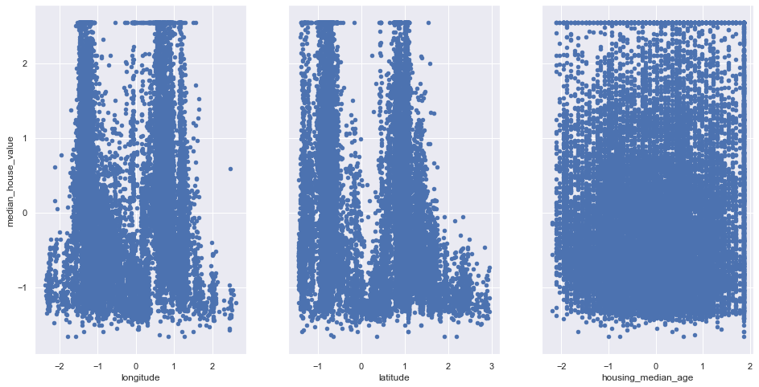
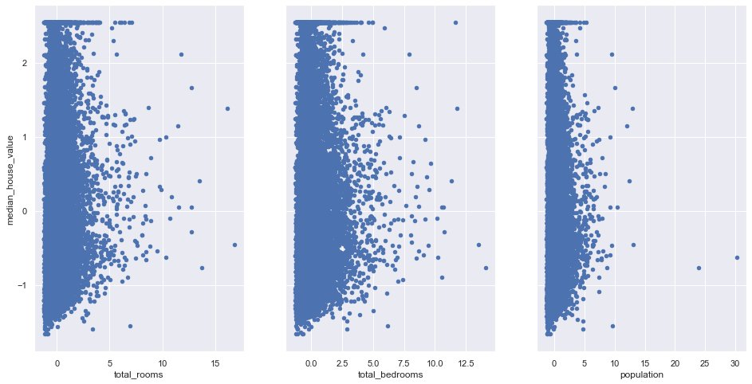
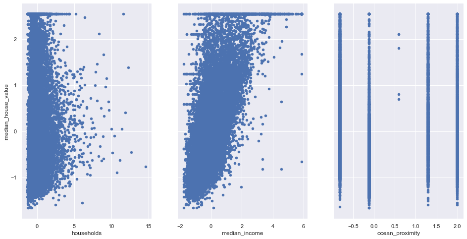
Insight:
The above graphs shows that only median_income and median_house_value has a linear relationship.
Check for Outliers:
for column in scaled_df:
plt.figure()
sns.boxplot(x=scaled_df[column])
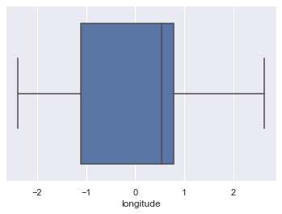
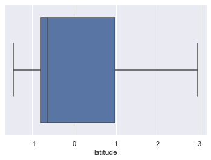
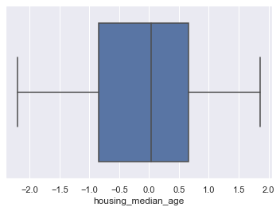
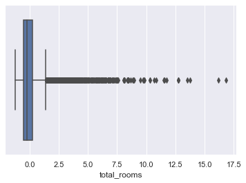
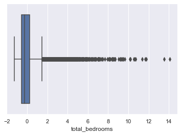
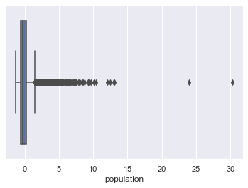
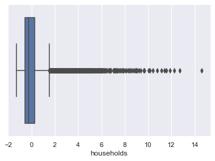
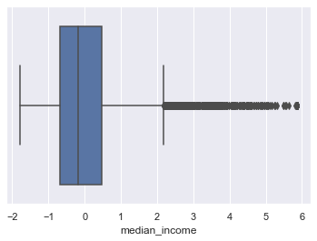
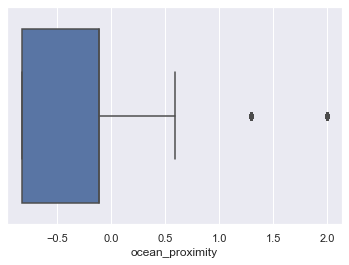
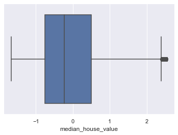
6. Extract X and Y data :
Extract input (X) and output (Y) data from the dataset.
X_Features=['longitude', 'latitude', 'housing_median_age', 'total_rooms',
'total_bedrooms', 'population', 'households', 'median_income',
'ocean_proximity']
X=scaled_df[X_Features]
Y=scaled_df['median_house_value']
print(type(X))
print(type(Y))
<class 'pandas.core.frame.DataFrame'>
<class 'pandas.core.series.Series'>
print(df_house.shape)
print(X.shape)
print(Y.shape)
(20640, 10)
(20640, 9)
(20640,)
7. Split the dataset :
Split the data into 80% training dataset and 20% test dataset.
from sklearn.model_selection import train_test_split
x_train,x_test,y_train,y_test=train_test_split(X,Y,test_size=0.2,random_state=1)
print (x_train.shape, y_train.shape)
print (x_test.shape, y_test.shape)
(16512, 9) (16512,)
(4128, 9) (4128,)
8. Apply Various Algorithms:
- Linear Regression
- Decision Tree Regression
- Random Forest Regression (Ensemble Learning)
- Lasso
- Ridge
- Elastic Net
Perform Linear Regression :
- Perform Linear Regression on training data.
- Predict output for test dataset using the fitted model.
- Print root mean squared error (RMSE) from Linear Regression.
linreg=LinearRegression()
linreg.fit(x_train,y_train)
LinearRegression(copy_X=True, fit_intercept=True, n_jobs=None, normalize=False)
y_predict = linreg.predict(x_test)
print(sqrt(mean_squared_error(y_test,y_predict)))
print((r2_score(y_test,y_predict)))
0.6056598120301221
0.6276223517950296
Perform Decision Tree Regression :
- Perform Decision Tree Regression on training data.
- Predict output for test dataset using the fitted model.
- Print root mean squared error from Decision Tree Regression.
dtreg=DecisionTreeRegressor()
dtreg.fit(x_train,y_train)
DecisionTreeRegressor(criterion='mse', max_depth=None, max_features=None,
max_leaf_nodes=None, min_impurity_decrease=0.0,
min_impurity_split=None, min_samples_leaf=1,
min_samples_split=2, min_weight_fraction_leaf=0.0,
presort=False, random_state=None, splitter='best')
y_predict = dtreg.predict(x_test)
print(sqrt(mean_squared_error(y_test,y_predict)))
print((r2_score(y_test,y_predict)))
0.5912422593872186
0.6451400183074161
Perform Random Forest Regression :
- Perform Random Forest Regression on training data.
- Predict output for test dataset using the fitted model.
- Print RMSE (root mean squared error) from Random Forest Regression.
rfreg=RandomForestRegressor()
rfreg.fit(x_train,y_train)
RandomForestRegressor(bootstrap=True, criterion='mse', max_depth=None,
max_features='auto', max_leaf_nodes=None,
min_impurity_decrease=0.0, min_impurity_split=None,
min_samples_leaf=1, min_samples_split=2,
min_weight_fraction_leaf=0.0, n_estimators=10,
n_jobs=None, oob_score=False, random_state=None,
verbose=0, warm_start=False)
y_predict = rfreg.predict(x_test)
print(sqrt(mean_squared_error(y_test,y_predict)))
print((r2_score(y_test,y_predict)))
0.4478028477744602
0.7964365549457926
Perform Lasso Regression (determine which variables should be retained in the model):
- Perform Lasso Regression on training data.
- Predict output for test dataset using the fitted model.
- Print RMSE (root mean squared error) from Lasso Regression.
lassoreg=Lasso(alpha=0.001,normalize=True)
lassoreg.fit(x_train,y_train)
print(sqrt(mean_squared_error(y_test,lassoreg.predict(x_test))))
print('R2 Value/Coefficient of determination:{}'.format(lassoreg.score(x_test,y_test)))
0.7193140967070711
R2 Value/Coefficient of determination:0.4747534206169959
Perform Ridge Regression (addresses multicollinearity issues) :
- Perform Ridge Regression on training data.
- Predict output for test dataset using the fitted model.
- Print RMSE (root mean squared error) from Ridge Regression.
ridgereg=Ridge(alpha=0.001,normalize=True)
ridgereg.fit(x_train,y_train)
print(sqrt(mean_squared_error(y_test,ridgereg.predict(x_test))))
print('R2 Value/Coefficient of determination:{}'.format(ridgereg.score(x_test,y_test)))
0.6056048844852343
R2 Value/Coefficient of determination:0.6276898909055972
Perform ElasticNet Regression :
- Perform ElasticNet Regression on training data.
- Predict output for test dataset using the fitted model.
- Print RMSE (root mean squared error) from ElasticNet Regression.
from sklearn.linear_model import ElasticNet
elasticreg=ElasticNet(alpha=0.001,normalize=True)
elasticreg.fit(x_train,y_train)
print(sqrt(mean_squared_error(y_test,elasticreg.predict(x_test))))
print('R2 Value/Coefficient of determination:{}'.format(elasticreg.score(x_test,y_test)))
0.944358169398106
R2 Value/Coefficient of determination:0.09468529806704551
Hypothesis testing and P values:
lm=smf.ols(formula='median_house_value ~ longitude+latitude+housing_median_age+total_rooms+total_bedrooms+population+households+median_income+ocean_proximity',data=scaled_df).fit()
lm.summary()
| Dep. Variable: | median_house_value | R-squared: | 0.636 |
|---|---|---|---|
| Model: | OLS | Adj. R-squared: | 0.635 |
| Method: | Least Squares | F-statistic: | 3999. |
| Date: | Thu, 10 Oct 2019 | Prob (F-statistic): | 0.00 |
| Time: | 16:09:59 | Log-Likelihood: | -18868. |
| No. Observations: | 20640 | AIC: | 3.776e+04 |
| Df Residuals: | 20630 | BIC: | 3.783e+04 |
| Df Model: | 9 | ||
| Covariance Type: | nonrobust |
| coef | std err | t | P>|t| | [0.025 | 0.975] | |
|---|---|---|---|---|---|---|
| Intercept | -4.857e-17 | 0.004 | -1.16e-14 | 1.000 | -0.008 | 0.008 |
| longitude | -0.7393 | 0.013 | -57.263 | 0.000 | -0.765 | -0.714 |
| latitude | -0.7858 | 0.013 | -61.664 | 0.000 | -0.811 | -0.761 |
| housing_median_age | 0.1248 | 0.005 | 26.447 | 0.000 | 0.116 | 0.134 |
| total_rooms | -0.1265 | 0.015 | -8.609 | 0.000 | -0.155 | -0.098 |
| total_bedrooms | 0.2995 | 0.022 | 13.630 | 0.000 | 0.256 | 0.343 |
| population | -0.3907 | 0.011 | -36.927 | 0.000 | -0.411 | -0.370 |
| households | 0.2589 | 0.022 | 11.515 | 0.000 | 0.215 | 0.303 |
| median_income | 0.6549 | 0.005 | 119.287 | 0.000 | 0.644 | 0.666 |
| ocean_proximity | 0.0009 | 0.005 | 0.190 | 0.850 | -0.008 | 0.010 |
| Omnibus: | 5037.491 | Durbin-Watson: | 0.965 |
|---|---|---|---|
| Prob(Omnibus): | 0.000 | Jarque-Bera (JB): | 18953.000 |
| Skew: | 1.184 | Prob(JB): | 0.00 |
| Kurtosis: | 7.054 | Cond. No. | 14.2 |
Warnings:
[1] Standard Errors assume that the covariance matrix of the errors is correctly specified.
Perform Linear Regression with one independent variable :
- Extract just the median_income column from the independent variables (from X_train and X_test).
- Perform Linear Regression to predict housing values based on median_income.
- Predict output for test dataset using the fitted model.
- Plot the fitted model for training data as well as for test data to check if the fitted model satisfies the test data.
x_train_Income=x_train[['median_income']]
x_test_Income=x_test[['median_income']]
print(x_train_Income.shape)
print(y_train.shape)
(16512, 1)
(16512,)
visualize relationship between features
linreg=LinearRegression()
linreg.fit(x_train_Income,y_train)
y_predict = linreg.predict(x_test_Income)
#print intercept and coefficient of the linear equation
print(linreg.intercept_, linreg.coef_)
print(sqrt(mean_squared_error(y_test,y_predict)))
print((r2_score(y_test,y_predict)))
0.005623019866893162 [0.69238221]
0.7212595914243148
0.47190835934467734
Insight:
Looking at the above values we can say that coefficient: a unit increase in median_income increases the median_house_value by 0.692 unit
#plot least square line
scaled_df.plot(kind='scatter',x='median_income',y='median_house_value')
plt.plot(x_test_Income,y_predict,c='red',linewidth=2)
[<matplotlib.lines.Line2D at 0x28824544240>]
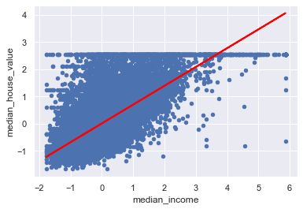
Hypothesis testing and P values:
using the null hypothesis lets assume there is no relationship between median_income and median_house_value
Lets test this hypothesis. We shall reject the Null Hypothesis if 95% confidence inderval does not include 0
lm=smf.ols(formula='median_house_value ~ median_income',data=scaled_df).fit()
lm.summary()
| Dep. Variable: | median_house_value | R-squared: | 0.473 |
|---|---|---|---|
| Model: | OLS | Adj. R-squared: | 0.473 |
| Method: | Least Squares | F-statistic: | 1.856e+04 |
| Date: | Thu, 10 Oct 2019 | Prob (F-statistic): | 0.00 |
| Time: | 16:10:17 | Log-Likelihood: | -22668. |
| No. Observations: | 20640 | AIC: | 4.534e+04 |
| Df Residuals: | 20638 | BIC: | 4.536e+04 |
| Df Model: | 1 | ||
| Covariance Type: | nonrobust |
| coef | std err | t | P>|t| | [0.025 | 0.975] | |
|---|---|---|---|---|---|---|
| Intercept | -4.857e-17 | 0.005 | -9.62e-15 | 1.000 | -0.010 | 0.010 |
| median_income | 0.6881 | 0.005 | 136.223 | 0.000 | 0.678 | 0.698 |
| Omnibus: | 4245.795 | Durbin-Watson: | 0.655 |
|---|---|---|---|
| Prob(Omnibus): | 0.000 | Jarque-Bera (JB): | 9273.446 |
| Skew: | 1.191 | Prob(JB): | 0.00 |
| Kurtosis: | 5.260 | Cond. No. | 1.00 |
Warnings:
[1] Standard Errors assume that the covariance matrix of the errors is correctly specified.
Insight:
The P value is 0.000 indicates strong evidence against the null hypothesis, so you reject the null hypothesis.
so, there is a strong relationship between median_house_value and median_income